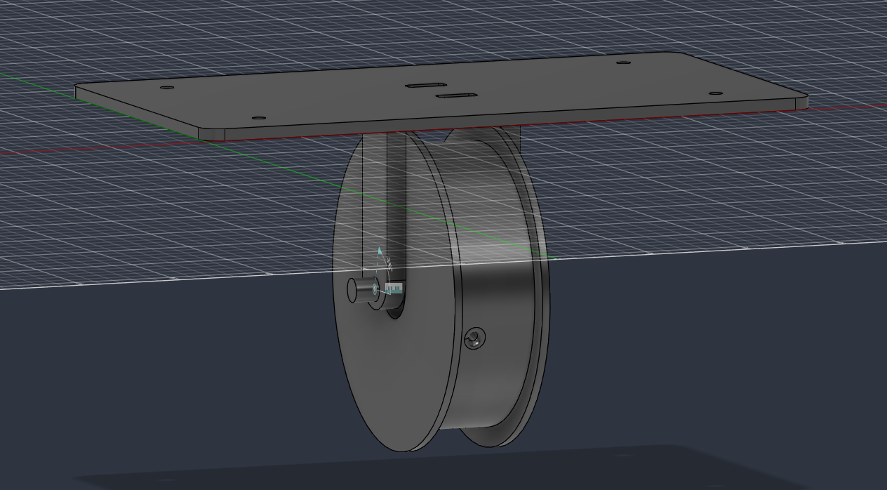
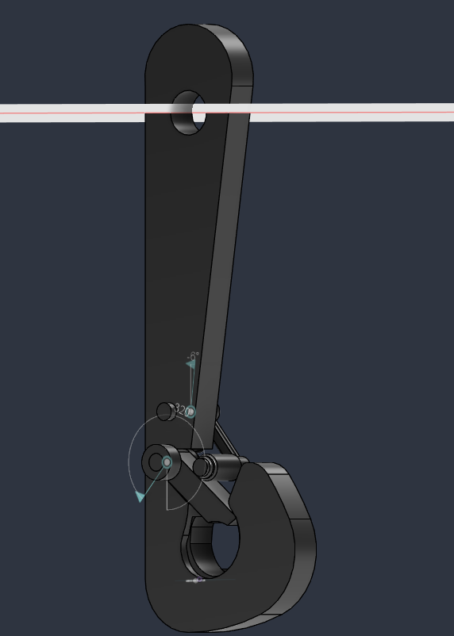
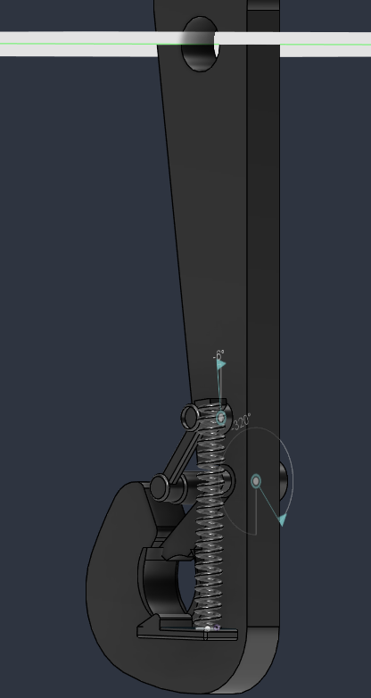
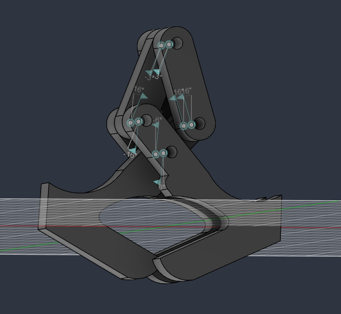

Problem
Autonomous package delivery from a Tarot T960 hexacopter requires lowering a payload to the ground and releasing it without landing, and without powered, actively-controlled descent hardware adding mass and failure modes.
Constraints
- Passive operation: no motor-driven descent control
- Automatic release on ground contact (tension loss), no RC input
- Mass and envelope limits for the T960 airframe: max payload weight 3.5 kg
- Automatic rewind for repeated deliveries
My role
I own the mechanism end-to-end: architecture, CAD, part design, and physical prototyping. The design is a 13-part assembly built around three subsystems:
- Centrifugal brake: governs descent speed passively
- Tension-loss release hook: releases the payload when line tension drops at touchdown
- Constant-force rewind spring: retracts the line after release
Approach & key decisions
- Chose a passive centrifugal brake over a motor + encoder: fewer failure modes, no flight-controller integration, lower mass. Trade-off: descent rate is fixed by brake tuning rather than commanded.
- Deferred final brake architecture to physical testing rather than simulation; friction behavior at this scale is cheaper to measure than to model.
- Weighed the original hook design against a carabiner-type hook: the carabiner improves tolerance for misaligning the drone to the box handle. The original hook-shaped end effector makes the passive latch/unlatch mechanism easier to visualize, but further brainstorming suggests it may be impractical.
- New design swaps the coil spring + slider latch mechanism for a rectangular spring latch.


Results
The centrifugal brake and its related components turned out to be too complicated to build and tune reliably. Therefore we are now considering a motor to control descent instead.
We also pivoted to a gravity grappling hook design from the original spring loaded or button release design: it grabs onto the package passively, closes under tension from the winch line, re-opens when that tension is lost at touchdown, and stays closed at rest otherwise.
